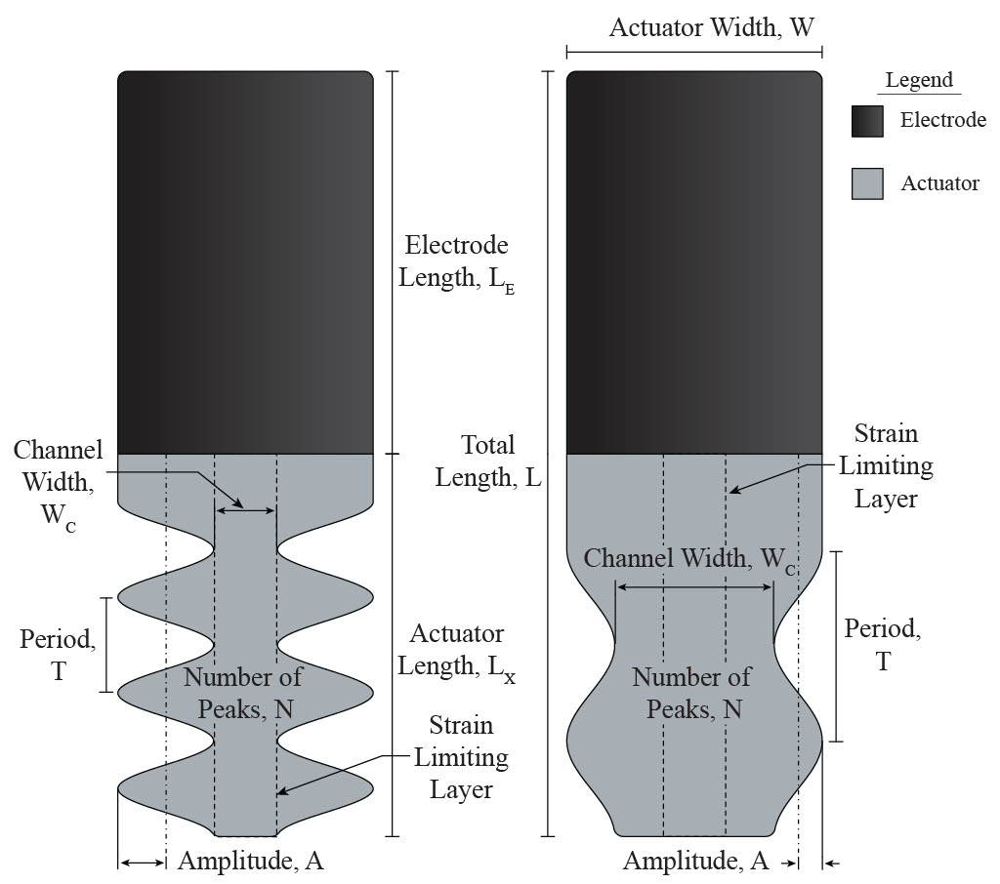
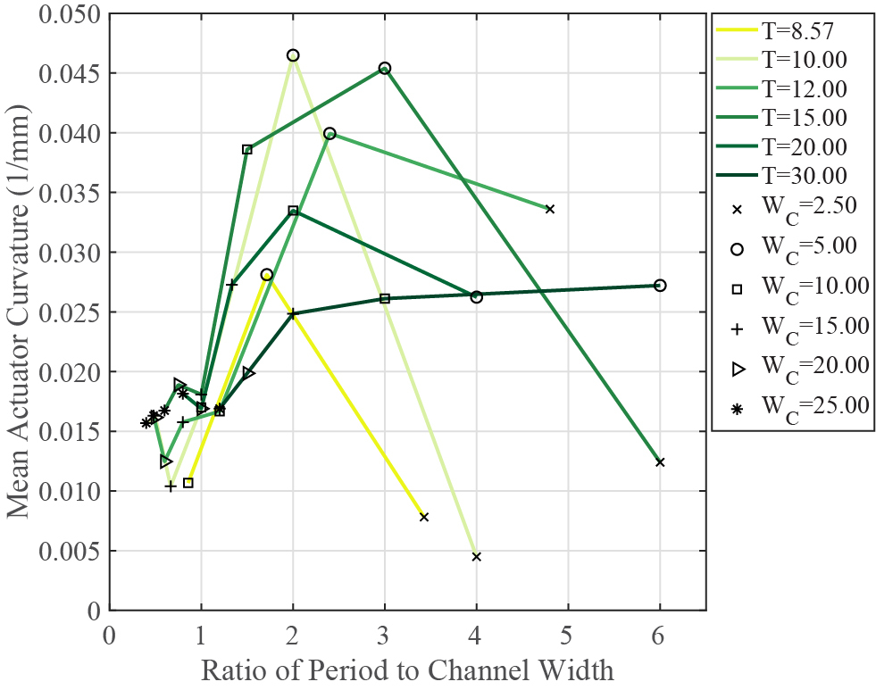
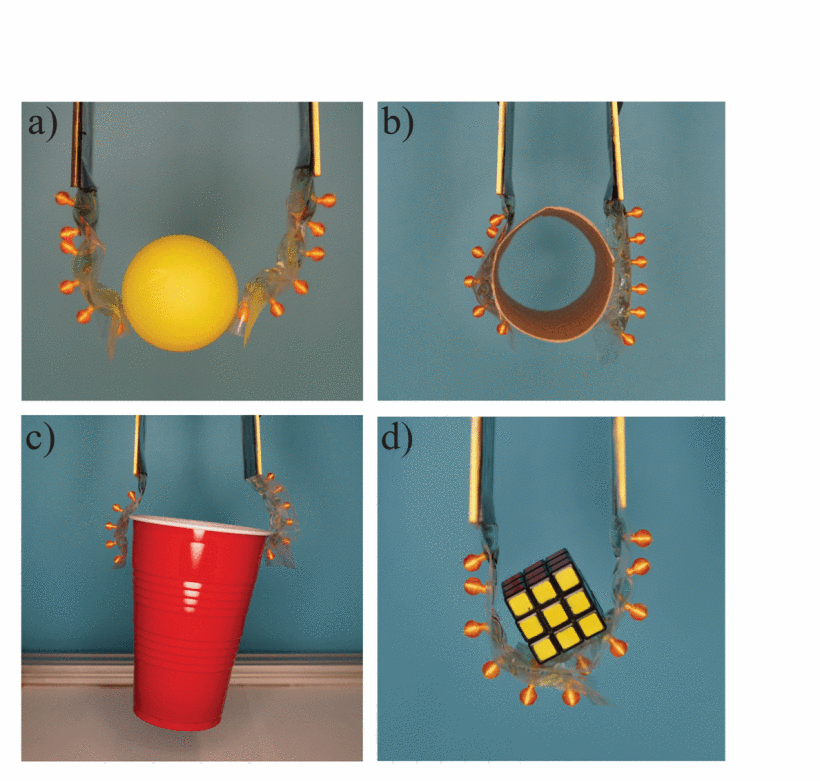

HASEL Actuator Design
Aug 2023 - Feb 2024
Affiliation: EMBiR Lab, University of Michigan Robotics
Keywords: soft robotics, electrostatics, actuators
Publication Link
Lab Summary
Introduction and Methods
Soft robotic systems offer a number of benefits over traditional robots: they can conform to the objects they interact with, they carry less risk of injury when working with humans, and are often able to safely handle more delicate objects. Hydraulically Amplified Self-healing ELectrostatic (HASEL) actuators have been a soft robot design of particular interest due to their fast response time and self-healing capabilities, but most prior research has focused on their application to linear actuators. This study swept the design space for bending HASEL actuators, identifying geometries of interest for multiple different objects.
A basic HASEL actuator is constructed from two heat-sealed layers of a polymer film enclosing a dielectric fluid. The film is heat sealed with the geometry of interest, and carbon paint electrodes are applied to the ends. When a high voltage is passed across the electrodes, they snap together and push fluid into the channel width, inducing bending (quantified through curvature). We varied the period and channel width with 5 values each, and ran each unique combination for 5 repetitions.

Results and Discussion
We found the highest curvatures at narrower channel widths, with a maximum at a narrow channel width and a period length of 10mm. The ratio of period to channel width was the most important predictor for HASEl curvature, with the optimal ratio being 2:1.

Combining several bending HASEL actuators allowed us to demonstrate multiple different types of robotic grips. Depending on the geometry and weight of the object, the geometric parameters of the actuators can be adjusted to favor power or precision.

My biggest contribution to this project was in the construction and testing of these actuators, requiring safe handling of high voltages, a materials understanding of dielectric strength and breakdown, and high-precision manufacturing. As the first research project I had been able to work on, this was an exciting cross between materials science and robotics that I have been interested in ever since.